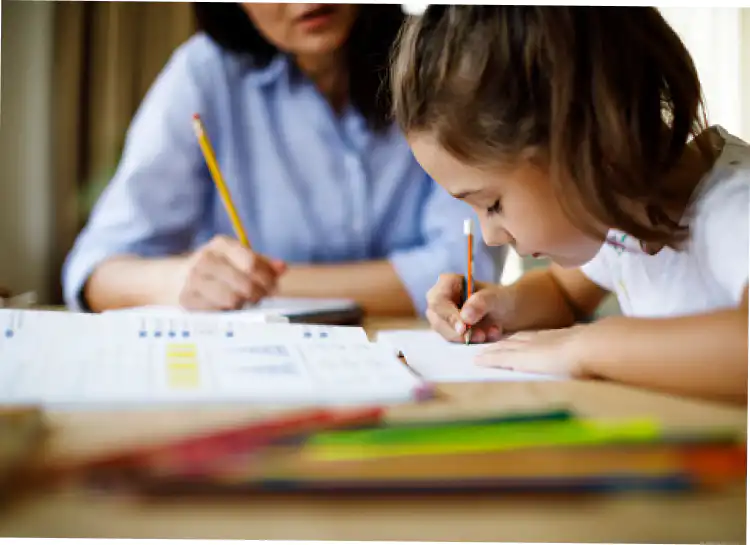

Feminism and the Struggle for Girls' Education in the World
Although girls' schooling rate increase by 10% each year, they are still generally considered secondary schools...
Introduction
According to UNESCO data, 62 million girls aged 6 to 14 were deprived of their education in 2018. In fact, girls who do not attend school are three times more likely to marry and become mothers before the age of 18 than girls who have graduated from high school. However, today’s girls will be tomorrow’s women, which is why they need to be educated and learn to stand up for their rights.
Barriers to girls’ education
The obstacles to girls' education are poverty and rurality, cultural traditions of gender inequality, violence at school and on the way to school, rules: for example on the African continent, 1 in 10 girls does not go to school when she has her period because tampons and sanitary towels are very expensive. Child marriages (12 million girls every year): for example, in West and Central Africa, 4 out of 10 girls are married before the age of 18 (and 1 in 7 girls before the age of 15 There is also the obstacle of early pregnancy, the absence of a birth certificate, the non-application of laws and emergency situations.
I, Malala
The book Moi, Malala
is dedicated to children in the world who do not have access to education, but also to teachers who continue to teach and to all those who fight for fundamental human rights and their education.
She tells us that her father is the owner of a school with 800 students divided into three schools: an elementary school, a secondary school for girls and one for boys. It was his dream. He even took in more than a hundred poor children for free even though his school was not really making a profit and many rich children were leaving. The girls' school is called Khushal. In which they wore a uniform called "shalwar kamiz" consisting of a pair of white floating pants, a long blue tunic, with a white scarf for the head.

She received many prizes, second prize in an eloquence contest, forty-five gold cups and medals, because she finished first in exams, debates or contests.
In Pakistan, she did not have water flowing from every tap, she had to bring gas bottles from the market to heat the water.
She tells us that she is destined to clean and cook for her brothers. Even if she could become a doctor to treat women as they are in short supply. However, she could not become a lawyer, an engineer, a designer, an artist or whatever she dreams of.
She is not allowed to leave her home without a male relative accompanying her.
One of the customs of Pakistan is to celebrate the birth of a boy more than a girl. However, Malala is the apple of her father's eye, which is rare. The first female name to appear on the family tree in 300 years is hers.
She learned to read at the age of 5, which made her father proud.
The women of the village must cover their faces when she leaves the house.
None of them can read. Malala's mother is from the village and cannot read because they do not go to school. It is rare for a woman in Pakistan to not be illiterate. Malala's cousins don't go to school and many of the girls in the village don't go to school. They will be married at a very young age.
Under the Taliban many girls have left school, those who still go are seen as bad Muslims and threatened with hell.